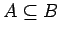

Inhalt Index DeskTop Bronstein

 Algebra und Diskrete Mathematik Mengenlehre Operationen mit Mengen
Algebra und Diskrete Mathematik Mengenlehre Operationen mit Mengen


Zur Veranschaulichung von Mengen und Mengenoperationen benutzt man VENN-Diagramme. Dabei werden Mengen durch ebene Figuren dargestellt. So wird durch die linke Abbildung die Teilmengenbeziehung  dargestellt.